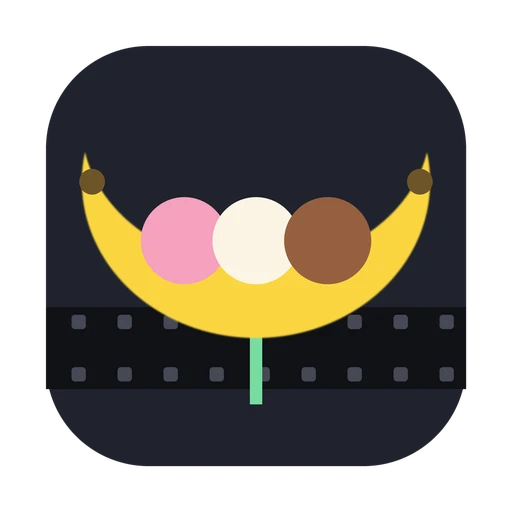

Copy when possible
Where a clean cut exists inside the black, the parts are packet-exact copies of the source, proven by decoding before anything is written.

Banana Split ReduxDesktop video splitter · a dustalexw app
Precise video splits. Minimal re-encoding.
Splits two- and three-segment cartoon episodes at their black transitions, names every part to match TVDB and TMDB, and checks each file before it's done.
Apple silicon · Python and FFmpeg included
Version 0.5.0
Banana Split Redux is a Mac app. Open this page on your Mac to download it.
Every black transition the app finds is marked; the star is the one it recommends at each expected break. Keep it, and the parts are named in season order. The show here is made up.
Import, detect black intervals, review the proposed cuts, choose how much may be re-encoded, review the export plan, then export and validate. Your originals are never touched.
Where a clean cut exists inside the black, the parts are packet-exact copies of the source, proven by decoding before anything is written.
When no clean cut is close, only the frames up to the nearest keyframe are re-encoded with the source's own codec. You see exactly how much first. Audio is never re-encoded.
Tracks, timestamps, frame count and order, first and last frames, seeking, audio sync, subtitles and chapters are all verified. A part that fails is flagged, not slipped in.
Two segments per file means one split, and parts become S01E01 and S01E02. Optional lookups fill in titles and check the season count.
Episode names… numbers every part across the season as Show - S01E03 - Title, from segment titles, file-name ranges or season order.
A player with sound, a four-second loop around each split, frame stepping, Keep & next, Shift-click ranges and Undo. Keep recommended splits in all handles a whole season.
H.264, HEVC, MPEG-2, MPEG-4/Xvid, VP8, VP9, AV1, WMV2 and FFV1 in MKV, MP4, MOV, AVI, WebM, MPEG/TS, FLV and WMV. Tested across the whole matrix, with a command-line engine (bsr-cli) for batches.
The app is self-contained: it carries its own Python, FFmpeg libraries and Qt, so there's nothing else to install.
The build downloads a pinned runtime and records its checksums in the app. For development, Banana Split Redux.command runs the same code in a local virtual environment (Python 3.10 or later).
git clone https://github.com/dustalexw/Banana-Split-Redux cd Banana-Split-Redux python3 packaging/build_macos_app.py --out dist # builds dist/Banana Split Redux.app ./bsr-cli --help # the command-line engine
macOS
S01E01-E02.